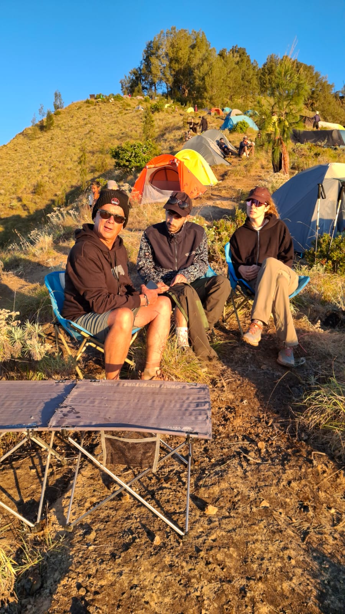

Planning a trek to Mount Rinjani requires choosing the right itinerary and packing smartly. From choosing the best route to packing the perfect gear, here is your complete roadmap to summiting Mount Rinjani.
Choosing Your Route
There are two main gateways to the mountain, each offering a unique experience:
- Sembalun Route: The most popular starting point for those aiming for the summit. It starts at a higher elevation and takes you through beautiful rolling savannahs before a steep climb to the Crater Rim.
- Senaru Route: Ideal for those who want to see the Crater Lake and hot springs without necessarily pushing for the summit. This route takes you through a dense, shaded tropical rainforest.
Popular Itineraries
Depending on your fitness level and available time, you can choose from these classic treks:
- 2 Days / 1 Night: Best for time-constrained travelers wanting to reach the Senaru or Sembalun Crater Rim.
- 3 Days / 2 Nights: The classic trek. Includes the summit, a descent to Segara Anak Lake, a dip in the natural hot springs, and camping at the crater rim.
- 4 Days / 3 Nights: A more relaxed pace, allowing you to fully soak in the beauty of the lake and hot springs.

The beautiful savannah along the Sembalun route.
What to Pack
While Rinjani Trekking Pro provides all camping gear, tents, sleeping bags, and meals, you should bring:
- Sturdy trekking shoes with good grip.
- Warm clothing (a windbreaker and thermal layers) for the freezing summit temperatures.
- A reliable headlamp for the night hike.
- Sunscreen, sunglasses, and personal medications.
Don't Worry About Dirty Clothes!
After days on the dusty trail, don't worry about packing dirty clothes for your next destination. Rinjani Trekking Pro offers an exclusive post-trek laundry service for our guests, so you can continue your holiday in Indonesia feeling completely fresh.
Ask About Our Packages via WhatsApp